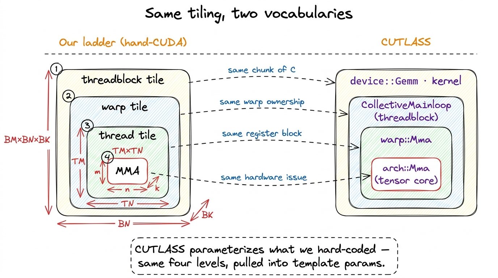
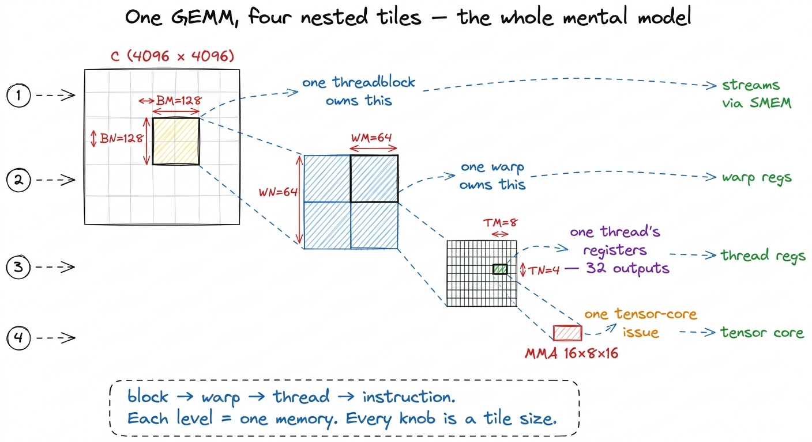
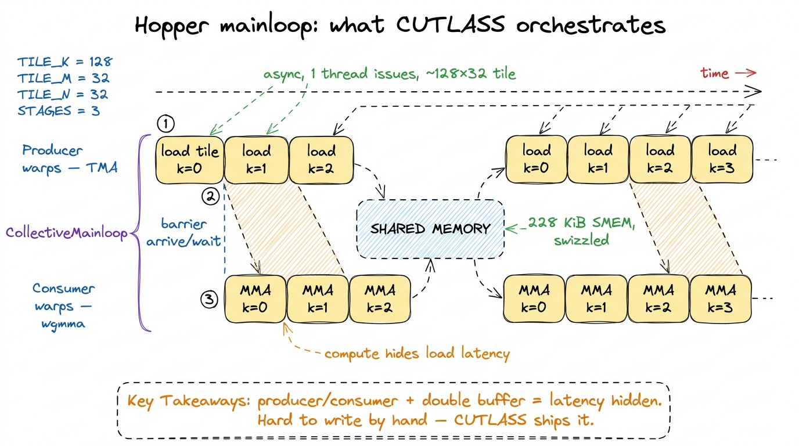
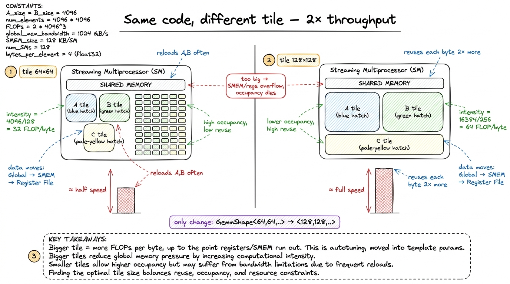
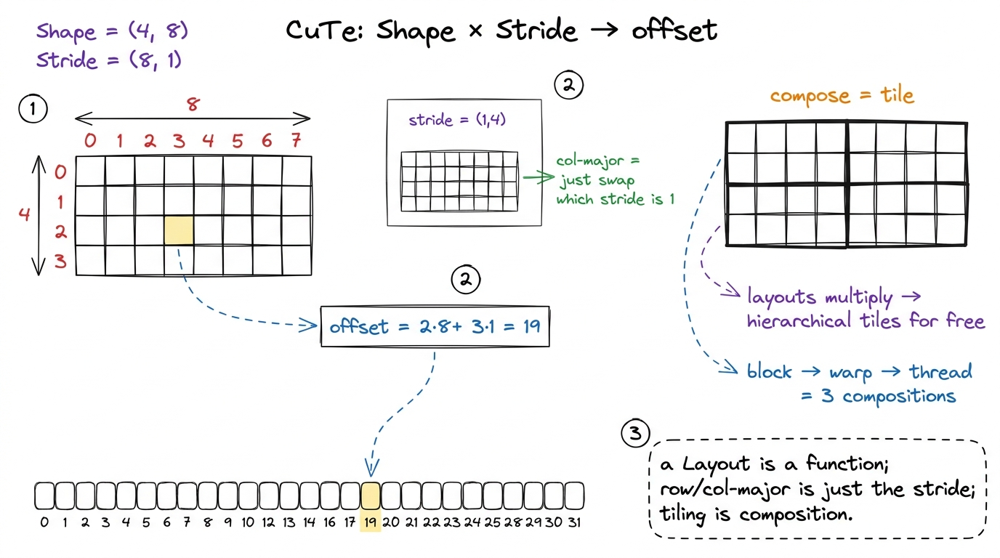
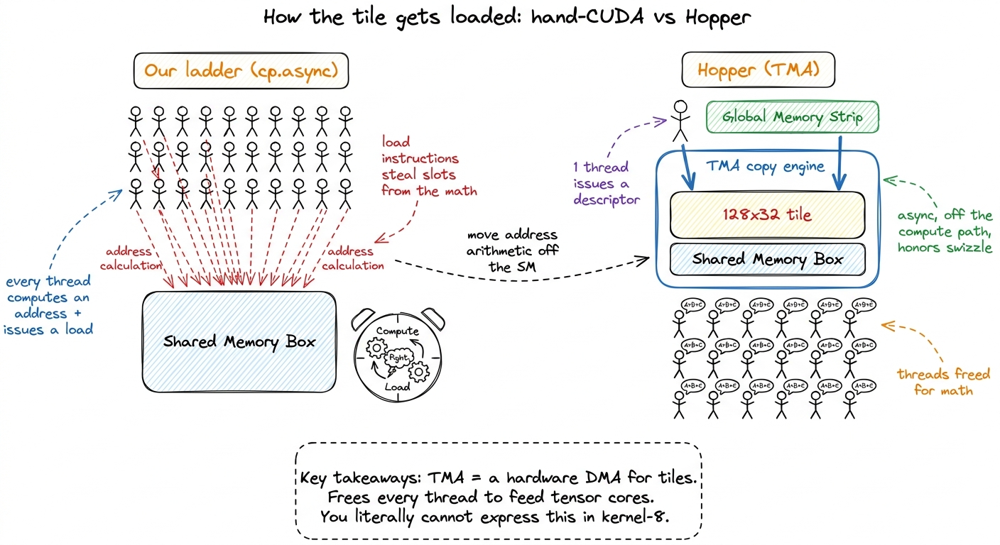
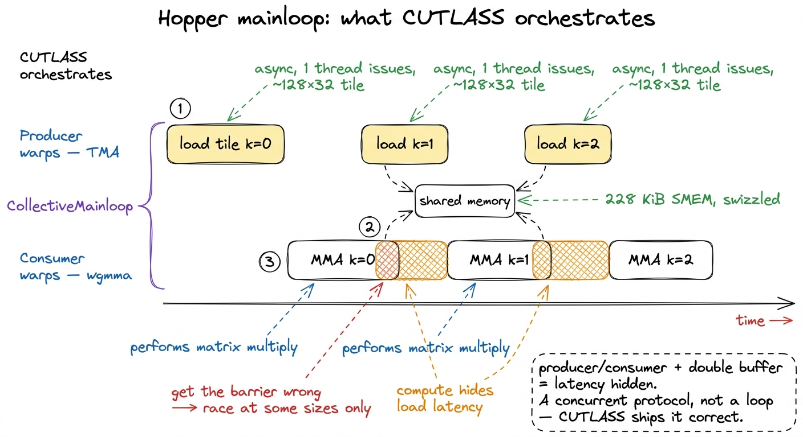
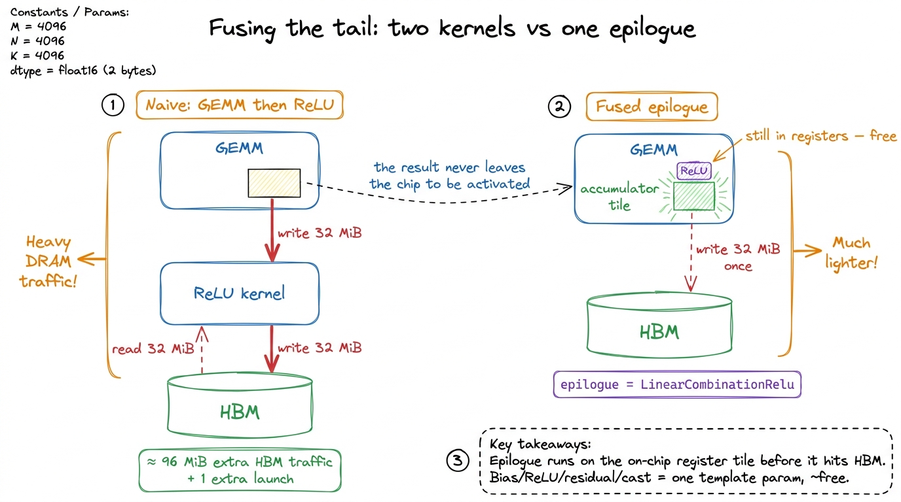

CUTLASS the hard way CUTLASS
By the end of the GEMM ladder we had a hand-written kernel that reached 93.7% of cuBLAS on an H100, and it took eight kernels of increasingly baroque indexing to get there. That was a real achievement, and I want to start by being honest about a strange feeling I had when I finished it: I had a fast kernel, and I could not ship it.
Here is the question this article answers. If we can already write a GEMM that hits 94% of NVIDIA's own library, why does nobody actually ship hand-written kernels? What does the industry use instead, and how does it relate to everything we just learned? The answer is a library called CUTLASS, and the surprising thing — the thing worth 5,000 words — is that CUTLASS is not a different algorithm. It is our algorithm, the exact warptiling kernel from the ladder, with every hard-coded choice pulled out into a template parameter, plus access to a few Hopper-only instructions our hand-CUDA could never reach.
So this is a bridge article. You do not need to have read every rung of the ladder to follow it — I will recap the one idea we need (the four-level tiling hierarchy) from scratch. But if you have climbed the ladder, the payoff here is specific: you will see that the intimidating C++ template soup of CUTLASS is just the pictures you already have in your head, given names.1 I'm following Kapil Sharma's "Learn CUTLASS the hard way," which climbs the same GEMM ladder we did — on a 4096³ FP32 matmul, an RTX 4090 (Ada, 82.6 TFLOP/s FP32 peak) walks from naive 0.65 TFLOP/s → coalesced 4.73 → shared-memory 6.10 → 1D tiling 18.49 → 2D tiling 30.55 → vectorized 39.0 → warptiling 45.82 TFLOP/s, then a BF16 tensor-core double-buffered kernel hits ~58 — and only then introduces the CUTLASS device::Gemm API as the industrial version of the last rung. (Our own ladder measured the same shape on an H100; the pattern of the climb is what matters, not the absolute board.) The framing I care about is that mapping: CUTLASS's levels are the ladder's levels.
First, why can't we just ship the hand kernel?
Let me sit with the puzzle for a moment, because the answer motivates everything else.
Our kernel-8 was fast for one shape on one GPU. Every performance decision was frozen into a #define or a constexpr: this tile is 128 × 128, this warp owns a 64 × 64 sub-tile, each thread accumulates an 8 × 4 register block, the loop unrolls exactly this far. Change the matrix from a square 4096³ to the tall-skinny 4096 × 4096 × 128 shape that shows up in an attention projection, and those numbers are wrong — you leave half the machine idle. Change the GPU from an A100 to an H100 and the instructions are wrong, because Hopper has a completely different tensor-core interface.
So a shipped GEMM can't be one kernel. It has to be a family of kernels — one specialized for each shape-and-hardware combination — with something that picks the right member of the family at the right moment. NVIDIA's cuBLAS is exactly that: a big bag of pre-tuned kernels plus a heuristic that dispatches to one. And the machine that generates that bag of kernels, the thing you'd use to build your own, is CUTLASS: CUDA Templates for Linear Algebra Subroutines.

figure rendering · A single hand-tuned kernel is fast for exactly one shape on one GPU. PThat reframes the whole trade. On the ladder we learned the machine by nailing every parameter to the wall and reading the profiler. CUTLASS un-nails them. It keeps the same algorithm and turns each nail into a knob you set from outside. We give up the pedagogy of writing the loop by hand, and we buy back the ability to retune the entire kernel by editing a few numbers — plus a door into instructions we could not otherwise open.
The one mental model: four nested tiles
Everything in this article hangs on a single picture, so let me draw it carefully and reuse it the whole way down. This is the mental model — our "pebble graph" — and if you hold it in your head, CUTLASS stops being scary.
A GEMM computes C = A × B. The matrices are far too big to sit in fast memory all at once, so we chop the work into a hierarchy of nested tiles, each level matching a level of the SM's memory. There are exactly four levels, and every performance decision lives in the size of one of these tiles:
- A threadblock tile,
BM × BN × BK. This is the chunk of the outputCthat one thread block owns. The block streams the needed strips ofAandBthrough shared memory — the fast on-chip scratchpad — aBK-thick slice at a time. On the ladder this was kernel 5. Concretely, think128 × 128 × 32. - A warp tile,
WM × WN. Inside the block, the 32 threads of one warp (the hardware's unit of lockstep execution) cooperatively own a sub-rectangle of that block. This was kernel 8. Think64 × 64. - A thread tile,
TM × TN. Inside the warp, each individual thread accumulates a small block of output entirely in its private registers — the fastest memory there is. Think8 × 4, so 32 outputs per thread. - The MMA / instruction shape,
m × n × k. This is the literal multiply-accumulate the tensor core executes in one issue. Think16 × 8 × 16.

figure rendering · The single mental model for the whole article: a GEMM decomposes intoHold onto that figure. The claim I am about to make, and defend for the rest of the article, is that CUTLASS has exactly these four levels and gives each one a namespace. It is not a rough analogy. The CUTLASS authors and our ladder are describing the same physical decomposition of a GEMM onto an SM, so the layers line up one-to-one.
The Rosetta stone: our levels are their namespaces
Let me place the two vocabularies side by side. On the left, the tiles we hand-derived. On the right, the CUTLASS type they correspond to.
- Threadblock tile →
cutlass::gemm::device::Gemmat the top (what you launch) driving a kernel-level object that runs one block's whole life. In CUTLASS 3.x this inner object is called theCollectiveMainloop(plus aCollectiveEpilogue). - Warp tile →
cutlass::gemm::warp::Mma— how the 32 threads of a warp cooperatively feed the tensor cores. Fragment layouts and register mapping live here. - Thread tile → the register fragments those warp-level ops read and write. In CuTe (more on this soon) it is just a partition of the warp's data.
- MMA shape →
cutlass::arch::Mma— a razor-thin wrapper over the literal hardware instruction:mma.syncon Ampere,wgmmaon Hopper.

figure rendering · The CUTLASS hierarchy is the warptiling kernel with its knobs pulled oWhy does this matter beyond being tidy? Because it tells you where to look when something is slow. If your CUTLASS GEMM is memory-bound, the bug is at the threadblock level — the CollectiveMainloop, the BK slice, the shared-memory staging — exactly the concern of kernel 5 on the ladder. If it is register-bound or has bad occupancy, look at the warp and thread tiles. The one-to-one mapping means every debugging instinct you built by hand transfers directly. That is the entire argument for having climbed the ladder first, and we will return to it at the end.
The device-level one-liner
Now the reveal. Here is an entire, launchable GEMM in the CUTLASS 2.x device::Gemm API — a type definition and a call.
using Gemm = cutlass::gemm::device::Gemm<
cutlass::half_t, cutlass::layout::RowMajor, // A: element, layout
cutlass::half_t, cutlass::layout::ColumnMajor, // B
float, cutlass::layout::RowMajor, // C
float, // accumulator
cutlass::arch::OpClassTensorOp, // use tensor cores
cutlass::arch::Sm90, // target Hopper
cutlass::gemm::GemmShape<128, 128, 32>, // threadblock tile
cutlass::gemm::GemmShape<64, 64, 32>, // warp tile
cutlass::gemm::GemmShape<16, 8, 16> // MMA instruction shape
>;
Gemm gemm_op;
gemm_op({ {M, N, K}, {dA, lda}, {dB, ldb}, {dC, ldc}, {dC, ldc}, {alpha, beta} });Read those three GemmShape lines slowly, because they are the whole point of the article made concrete. <128, 128, 32> is BM × BN × BK — the threadblock tile, level 1 of our mental model, the one we spent kernel 5 hand-tuning. <64, 64, 32> is WM × WN — the warp tile from kernel 8, level 2. <16, 8, 16> is the instruction shape, level 4 — the tensor-core m × n × k we'd otherwise emit by hand.2 The <16, 8, 16> shape is an Ampere/Ada mma.sync tile (Kapil's original uses the 16×16×16 WMMA shape via the nvcuda::wmma API — load_matrix_sync, mma_sync, store_matrix_sync; either is a legal synchronous tensor-core op). On true Hopper (Sm90) you'd instead go through the 3.x collective API to reach wgmma, whose instruction shape is a warpgroup op — m64nNk16, with N a multiple of 8 up to 256 — where a group of four warps issues one asynchronous matrix op. CUTLASS swaps the arch-level template accordingly; the device-level line barely changes.
Every knob we nailed to the wall in the ladder is now a template argument sitting in one place. Want a taller tile for a skinny matrix? Change 128 to 256. Want a different tensor-core op? Change the third shape. The seven other lines pick element types (half_t for FP16 inputs, float for the accumulator — lower-precision inputs, higher-precision accumulation, exactly the tensor-core pattern from the ladder), memory layouts, and the target architecture. That is a complete, correct, tensor-core GEMM in a dozen lines.
But "correct" and "fast" are different words, and I want to be honest about the gap.
The catch: which numbers, and why it's the same autotuning problem
The template compiles for almost any tile sizes you type. It does not run well for almost any of them. Picking <128, 128, 32> versus <64, 64, 64> versus <256, 128, 32> can change your throughput by 2×, and the right answer depends on M, N, K, the data type, and the GPU.
Let me do the napkin math on why the tile size matters so much, because it is the same reasoning from kernel 5, just restated. A GEMM's whole game is arithmetic intensity: FLOPs done per byte read from slow memory. For a BM × BN output tile computed over K, we read roughly (BM + BN) × K × 2 bytes of A and B (in FP16) and do 2 × BM × BN × K FLOPs. So intensity ≈ (BM × BN) / (BM + BN). Plug in a square 128 × 128 tile: (128 × 128) / (128 + 128) = 16384 / 256 = 64 FLOPs per byte. A 64 × 64 tile: 4096 / 128 = 32. The bigger tile does twice the work per byte loaded — it reuses each loaded value across more outputs. That is why big tiles are fast when they fit.
So why not always pick the biggest tile? Because a 256 × 256 tile needs a huge slab of shared memory and a mountain of registers, and past a point you can't fit enough blocks on an SM to hide latency — occupancy collapses. The sweet spot is a balance, and it moves with every problem. This is precisely the autotuning problem from kernel 7, lifted into template space. CUTLASS ships a profiler that sweeps the configuration lattice and reports TFLOP/s for each, so you don't grope in the dark — but the search space is enormous and the wrong tile really can halve your throughput.

figure rendering · The same CUTLASS type with a different threadblock tile can differ 2×The point I want you to take from this section is reassuring: you already know how to reason about this. Nothing new was introduced. The knobs moved from #defines to template arguments, but the physics — reuse versus occupancy — is identical to what you felt on the ladder.
CuTe: layouts become first-class algebra
The device::Gemm API above is CUTLASS 2.x. To understand why 3.x exists — and why CUTLASS can target Hopper and Blackwell at all — we need the small, genuinely new idea sitting underneath it: a layout library called CuTe (CUDA Tensors). This is the one piece of the article that is a real new concept rather than a renaming of something you already know, so let me slow down and build it from a tiny by-hand example.
Start with a question. In hand-CUDA, what is a "layout"? When you write A[m * N + k], where does the row-major-ness live? The answer is uncomfortable: it lives in your head and in that multiplication. There is no object called "the layout." If you switch A to column-major, you rewrite the arithmetic everywhere by hand and hope you caught every site. The mapping from a 2-D coordinate to a 1-D memory offset is implicit, scattered, and error-prone.
CuTe's move is to make that mapping an object. A Layout is a pair — a Shape and a Stride, both nested integer tuples — and it is literally a function from a logical coordinate to a linear memory offset.
// a 4-row, 8-col row-major tile: offset(i,j) = i*8 + j
auto layout = make_layout(make_shape(4, 8), make_stride(8, 1));
// a Tensor pairs a pointer with a layout:
auto A = make_tensor(ptr, layout);
A(2, 3); // == ptr[2*8 + 3] — indexing IS layout applicationLet me walk the arithmetic by hand so there is no mystery. Shape (4, 8) says "4 rows, 8 columns." Stride (8, 1) says "to move one row, jump 8 elements; to move one column, jump 1 element." So the offset of coordinate (i, j) is i × 8 + j × 1. Coordinate (2, 3) maps to 2 × 8 + 3 = 19. That's it — the layout is the function offset = i·8 + j, made explicit and passable around as a value.
Now here is the small surprise. Row-major versus column-major stops being a special case. A column-major version of the same tile is just stride (1, 4) instead of (8, 1) — "to move one row jump 1, to move one column jump 4." Same Shape, different Stride, and every consumer of the layout automatically does the right indexing. The distinction that made us rewrite arithmetic by hand collapses into "which entry of the stride tuple is 1."

figure rendering · A CuTe Layout is a Shape paired with a Stride — a pure function from lThat still might sound cosmetic. Here is what it actually buys, and it's the reason CuTe exists. Because layouts are composable algebra, you can express "tile this global tensor into 128 × 32 blocks, then partition each block across warps, then across threads" as a product of layouts — one line each — rather than as the spiral of blockIdx/threadIdx/% // arithmetic we hand-wrote across four ladder kernels.3 This is CuTe's local_tile / local_partition machinery. The mental model that finally made it click for me: a Layout is a coordinate-space reshaping function, and the tiling hierarchy is just function composition. Once the layout is right, the copy and the MMA are almost boilerplate — you partition the source and destination with the same layout and the indexing falls out. Getting the layout wrong is where the debugging happens.
Look back at the four-level mental-model figure. Each zoom-cone — block → warp → thread — is one layout composition in CuTe. The entire nested-tile picture, the thing we derived across four hand-written kernels, becomes three lines of layout algebra. That is the new idea, and it is why 3.x could reach hardware 2.x's fixed template shapes could not.
What CUTLASS reaches that we couldn't
Everything so far — the four levels, the one-liner, even CuTe — you could dismiss as "much nicer packaging for kernel 8." Fair. So let me get to the part that is genuinely beyond our hand-CUDA, the part where CUTLASS earns its keep rather than just tidying up: the Hopper feature set.
Recall how our ladder moved data. It loaded shared memory with plain vectorized float4 loads, or at best cp.async in the double-buffering kernel — where each thread still computed its own address and each warp still burned instructions issuing loads. On Hopper, CUTLASS's CollectiveMainloop does something categorically different. It uses the Tensor Memory Accelerator (TMA): a dedicated hardware unit that copies whole multi-dimensional tiles from global memory into shared memory asynchronously, addressed by a descriptor rather than by per-thread arithmetic. One thread kicks off a bulk copy of a 128 × 32 tile; the rest of the warpgroup does other work while it lands.4 TMA also handles the reverse (SMEM→global) and the swizzling needed to keep the destination bank-conflict-free. Writing a correct swizzle by hand is miserable — it's the fiddliest part of a fast Ampere kernel. CuTe layouts encode the swizzle declaratively and TMA honors it, so it disappears from your code. See Hopper TMA for the descriptor mechanics.
Stop and appreciate why that is a bigger deal than it sounds. On the ladder, address arithmetic and load issue competed with the math for the same instruction slots — every thread computing a load address was a thread not doing a fused-multiply-add. TMA moves that entire job off the compute path and onto a copy engine. The SM's threads are freed to do nothing but feed tensor cores.
For the math itself, Hopper's CUTLASS issues wgmma — a warpgroup matrix-multiply-accumulate where four warps (128 threads) cooperate on one asynchronous tensor-core op, reading operands straight from shared memory. And the whole threadblock tile can be promoted to a thread-block cluster spanning several SMs that share data through distributed shared memory — a level of the hierarchy that simply did not exist on the hardware our ladder targeted.

figure rendering · The Hopper win in one picture. On the ladder, all 32 threads of a warpNow — could you write all of this by hand? In principle, yes. wgmma, TMA descriptors, and cluster launch are all exposed in PTX; nothing is secret. But the pipeline that ties them together is the hard part. You have to issue the next TMA load, wait on the previous one, feed wgmma with the tile that just landed, drain the accumulator, and never let a consumer read a buffer a producer hasn't finished writing. That is a warp-specialized producer/consumer state machine, and it is extremely easy to get subtly wrong — an off-by-one on a barrier and you get a race that only shows up at certain matrix sizes. CUTLASS's CollectiveMainloop is a battle-tested implementation of exactly this dance.5 This is the warp-specialization pattern: some warps in the group are dedicated producers driving TMA, others are consumers driving wgmma, coordinated through shared-memory barriers with an arrive/wait handshake. It's the single biggest reason a from-scratch Hopper GEMM is so much harder than an Ampere one — the Ampere kernel is a loop, the Hopper kernel is a concurrent protocol.

figure rendering · The Hopper mainloop is a warp-specialized producer/consumer pipeline:The epilogue: where fusion lives
One more level deserves a name, because it pays off constantly in real inference workloads and it is where a lot of the actual speedup hides.
After the K-loop finishes, every ladder kernel of ours did the same dull thing: write the accumulator to C with a scale-and-add (alpha·acc + beta·C). CUTLASS calls that final phase the epilogue, and it is a pluggable template. Why is that worth a section? Because of where the data is when the epilogue runs.
Think about it. The moment the main loop ends, the result tile is sitting in registers, on-chip — the fastest, most expensive real estate on the GPU. Any element-wise work you want to do to it — add a bias, apply a ReLU, add a residual, cast down to bf16 — you can do right there, before the data ever travels back out to HBM. Do it in the epilogue and it is nearly free. Do it as a separate kernel afterward and you pay to write the whole tile to HBM, launch a new kernel, and read it all back — for an operation that touches each element once.
That is exactly the operator fusion win from the memory-bound playbook, except CUTLASS hands it to you as a template parameter — cutlass::epilogue::thread::LinearCombinationRelu and its many friends — instead of forcing a second kernel launch. Let me put a number on it. A 4096 × 4096 FP16 output is 4096 × 4096 × 2 = 32 MiB. A naive "GEMM then ReLU" writes those 32 MiB to HBM, then a ReLU kernel reads 32 MiB and writes 32 MiB back — 96 MiB of HBM traffic for the fusion-avoidable part. The fused epilogue does zero of that; the ReLU happens on the register tile in flight. For the bias-add-activation tails that dominate real transformer MLPs, the epilogue is frequently where the win over a naive two-kernel implementation actually comes from.

figure rendering · The epilogue runs while the result tile is still in registers, beforeSo when do you actually write it by hand?
After all this, the fair and slightly uncomfortable question is: why did we spend eight articles hand-writing kernels at all, if the answer was going to be "use the library"? The answer is a clean three-way split, and it's worth stating plainly because it's the practical takeaway.
Learn by hand — always. You cannot understand what CUTLASS is doing — cannot debug it, cannot choose its tile sizes, cannot read its profiler output — without having felt coalescing, bank conflicts, register pressure, and occupancy in your own kernel first. Go back to the Rosetta-stone figure: every template parameter in that device::Gemm line is a decision you already made by hand on the ladder. When the CUTLASS profiler tells you tile A beats tile B, you know why — arithmetic intensity versus occupancy, the exact trade we did napkin math on. CUTLASS is illegible to someone who skipped the ladder; it is transparent to someone who climbed it.
Ship with CUTLASS whenever your problem is a GEMM or a GEMM-shaped thing — attention, convolution-as-GEMM, grouped or batched matmul, a fused MLP — and you want to actually use Hopper's tensor cores at full speed. Re-deriving the TMA / wgmma / cluster pipeline by hand to beat CUTLASS is a multi-month project that a team of NVIDIA engineers is already doing full-time. Recall the scoreboard: our best hand-kernel reached ~94% of cuBLAS, and a well-tuned CUTLASS config is roughly cuBLAS — because cuBLAS's newer kernels are built on this same machinery. You are not going to out-engineer that with a weekend of #defines.6 This is not hypothetical. The fastest open GEMMs in production inference — DeepSeek's DeepGEMM, the FlashMLA kernels, and much of vLLM's and FlashAttention's Hopper path — are built directly on CuTe and the CUTLASS collective abstractions rather than on hand-rolled PTX. See DeepSeek's FlashMLA / DeepGEMM. When the frontier labs write "custom kernels," they usually mean custom CuTe, not custom assembly.
Write hand-CUDA when the operation is not GEMM-shaped and CUTLASS's abstractions fight you: irregular reductions, custom sparsity, weird data-dependent access patterns, small bespoke fused ops where the template machinery costs more than it saves. There, the three regimes and the ladder's whole toolkit are exactly what you reach for — and you reach for them fluently because you climbed the ladder.
The mental model to leave with is the one we drew at the very start and never abandoned: a GEMM is four nested tiles, block → warp → thread → instruction, each matched to one level of the SM's memory. The ladder taught you to build those four tiles by hand and feel every trade-off in your own profiler. CUTLASS is the industrial parameterization of those same four tiles, plus the Hopper-only instructions — TMA, wgmma, clusters — that you cannot easily reach from hand-CUDA. They are not competitors. The ladder is how you earn the right to use CUTLASS well.
And the story does not stop at Hopper. In the next section, on Blackwell's tcgen05 and Tensor Memory, even CUTLASS's abstractions start shifting under the hardware again — a fifth kind of on-chip memory appears, and the four-level picture we just internalized has to stretch to hold it.